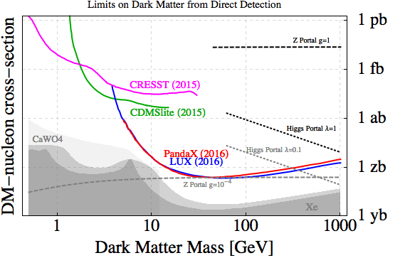

2016-07-24 16:54:00
两年前，我在《中国锦屏地下实验室》一文中谈到上海交大的PandaX以及北京清华的类似新计划。其实这种直接探测暗物质与实验室里的介质通过弱作用力反应的实验，在国际上有好几个，是过去十年非常热门的高能物理实验方向之一。在技术上，它们与以往的质子衰变（SU5统一场论预言质子会以很小的机率衰变，后来被实验证明是错的）以及一系列测量Neutrino（中微子或微中子，有很小的未知质量，会在三个种类之间自行嬗变；中国有大亚湾实验仍在进行之中）的实验极为相似，都是选择地底深处，以减少宇宙綫所引起的假信号，储存了大量同位素稳定（亦即没有会自发衰变的同位素）的介质，藉着观察其核子衰变来检验是否有理论预测的新过程。
PandaX（Particle AND Astrophysical Xenon detector）选用的介质是Xenon，这是很昂贵但是很理想的介质，美国最先进的实验LUX（Large Underground Xenon experiment）也选用了它。当然LUX在1.5公里深的South Dakota废矿里用了370公斤的Xenon，那么晚了三四年开始的PandaX要后来居上，自然选择了在2.4公里深的雅砻江锦屏水电站引水隧洞用500公斤的Xenon来做实验。2016年七月21日，LUX宣布实验完成，公布了完整的结果；由于电子系统的进步和各项细节的顺利执行，LUX所探测的精度比原定高出了四倍（亦即超过半个数量级），但是仍然是连一个暗物质反应都没有观察到。PandaX还衹做到一半，但是已经有了精度相似的数据，于是匆忙在同一天晚上开了记者会，同样宣布了没有观察到暗物质的结果（参见http://www.guancha.cn/Science/2016_07_23_368600.shtml）。

这是LUX公布的总结果。国际上几个类似的实验，从上到下，逐步否决了超对称暗物质的参数空间。最新的LUX2016和PandaX2016，已经又比LHC否决的范围超出一个数量级以上了。其实就算不假设超对称，只假设暗物质参加弱作用力，作用强度也已经必须小于10^-4，前景十分黯淡，完全印证了我一直强调的，暗物质参加弱作用力是个天外飞来的假设，除了超对称之外，并没有理论的基础，而超对称本身却极不靠谱。
既然LUX已经做完，而PandaX还没有得到所有原定的数据，那么物理界是否还在等后者完成实验呢？很不幸的，不但PandaX在后段实验中观测到暗物质的机率微乎其微，高能物理界已经接受了这个事实，基本上没人在乎PandaX了。这是因为如前所述，LUX的测量精度比原定高了四倍，把理论预测的可能参数空间基本完全涵盖，而这刚好也是PandaX真正计划要搜索的部分。PandaX的测量精度还有余量，但是已经没有理论上的基础，所以没有实际上的意义。
不是做高能物理为生的读者或许会问，説不定理论是错的，那么PandaX反而会有机会做出真正重要的发现，不是吗？其实这些实验所依据的“理论”，正是我在一系列前文（参见《高能物理的绝唱》）中提过的超对称，不但在过去30年的高能对撞机实验里被完全否定，这次LUX和PandaX的结果把它又多否定了一个数量级以上。换句话说，这些新实验结果否定的不是暗物质的存在性，而是暗物质是超对称粒子的可能性。所以“理论”的确是错的，可惜这对PandaX没有帮助。
这是因为即使躲到地底深处，并且选用昂贵而稳定的介质，仍然会有很多杂讯，例如Neutrino和地壳里放射性元素的自然衰变。PandaX在目前为止的实验过程中所观察到的衰变事件总数超过3000万，而且各式各样的粒子都有可能，而实验室所能容纳的探测器种类十分有限（否则就至少等同重建LHC的实验腔，亦即《高能物理的绝唱之一》所提到的人类世上最复杂的机器，而且反应区大了十几个数量级），不可能对每一个衰变都追根究底，找出它的缘由。所以这些实验必须根据理论预测的特徵，对衰变事件进行针对性的探测器安排，并在软体方面做高速筛选。既然理论是错的，统计上搜集的样品再多也没有意义。
当然LUX和PandaX这一系列实验，并不是超对称这个歪论的唯一受害者。高能物理实验一向都必须针对某个特别的理论而设计，LHC本身也是针对超对称而建造的（Higgs衹是安慰奖），所以超弦这帮骗子浪费的人类资源，至少已经以百亿美元计了。现在衹有Higgs证明是现实存在的粒子，他们（如丘成桐）居然有脸说秦皇岛的新对撞机也是为Higgs而设计。其实它的尺寸比研究Higgs所需的大了超过10倍，费用超过20倍，连类型都不对:它是环状的连续对撞机，而不是直綫对撞机。前者有较高的亮度（Luminosity），所以适合搜索未知的参数空间，而后者在能量相当的前提下，便宜至少一半以上，所以适合精密测量已知的粒子。这样的一个针对Higgs的直綫对撞机，早已在紧锣密鼓地筹备之中，它就是ILC（International Linear Collider，国际直綫对撞机），可能会落户在日本（美国人自己似乎没什么兴趣，大概因为ILC的性价比虽然不像秦皇岛对撞机一样等于0，但是也衹稍大于0；欧洲人则已在LHC上学过一次乖）。
那为什么由美国人主导的高能物理界不让中国主办ILC呢？除了不像秦皇岛的新对撞机，ILC至少有一点实际物理意义之外，我认为还有一个理由，就是直綫对撞机的技术和环状对撞机不同：后者降低能量和尺寸之后，可以作为同步辐射的光源，在固态物理和生物物理上有很大的用途，但是这是老技术，中国早就有了（臺湾和上海在过去两年先后启用了世界先进的同步辐射光源）；而前者在降低能量和尺寸之后，就成为自由电子Laser，这不但是最佳的硬X光（Hard X-Ray，亦即波长很短的X光，同步辐射是软X光）源，在研究化学反应（因为它脉衝极短、解析度极高，不止可以看见个别原子，甚至可以看见个别电子从一个原子跳到另一个原子的过程）上有不可替代的功能，在军事上也有发展成太空武器的潜力，而中国在这方面还是一片空白。中国高能物理界的带路党徒，不可能不知道前述的道理，所以他们放着ILC不争取，而衹知附和丘成桐公然撒谎，想忽悠出贵上20倍而且完全无用的秦皇岛对撞机，就特别可恶了。
LHC预定在下个月，公布针对我在《高能物理的绝唱之二》里讨论过的750GeV“统计鼓包”所做的新实验的结果。我仍然认为它是真实粒子的可能性在1%以下，立此存证。届时会再写一篇详细的分析，为高能物理的死亡，盖棺论定。